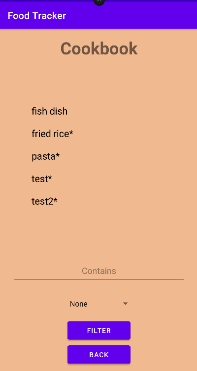
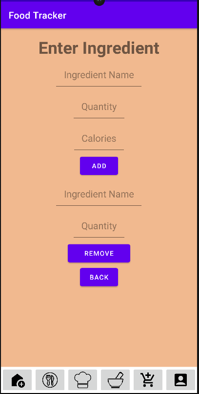

Introduction:
GreenPlate is an android application dedicated to cultivating sustainable eating and shopping habits. It aims to revolutionize the way people approach their dietary habits, focusing on sustainability and resource efficiency. By promoting sustainable eating and shopping habits, GreenPlate empowers users to contribute positively to the environment while improving their own well-being.
In a world where food waste is a significant issue, GreenPlate offers a solution by providing users with tools to track their food consumption, manage their pantry, create recipes, generate shopping lists, and make informed choices about their meals.
By promoting sustainable eating and shopping habits, GreenPlate empowers users to contribute positively to the environment while improving their own well-being.
Design & Architechure:
This is our Domain Model that aided in visualizing different attributes in our app.
This is one of our Singleton design pattern for the class FirebaseService which makes sure that the application uses a single shared instance of FirebaseDatabase, optimizing the use of resources and ensuring consistent access to the instance across the application.
User Interface



Functionality:
The GreenPlate app offers a comprehensive array of features tailored to support users on their sustainable food management journey. From secure account creation to daily calorie tracking, personal pantry management, and dynamic shopping list generation, users have access to a suite of tools designed to facilitate their dietary goals.
Conclusions and Reflections/Learning:
Reflecting on our journey throughout the development process, we are proud of the progress we have made in building GreenPlate. Despite encountering challenges along the way, such as implementing complex functionalities and ensuring seamless integration between different components, we have created a functional and impactful app.
In the beginning, we had no idea what we were dealing with. Every one of us was unfamiliar with the concepts being covered as well as GIT and Android Studio. However, through collaboration, dedication, and help from our mentor and Professor Roy, we were able to learn everything we needed to be successful and build this app. Each sprint has helped us learn more about coding architechure, design principles, design and user diagram as well as how to interact with a Firebase database.
Therefore, this project has given us valuable insights into software engineering principles, design patterns, and modern technologies, which will undoubtedly help our future endeavors in this field, but most importantly, this project has taught us the most about team work. So, we are so proud of how far we have come and the app we created along the way. Thank you CS 2340!
Contributers:
1. Lily Ren: App & Website
2. Josh Wu: App
3. Steven Li: App
4. John Doan: App
5. Jason Lai: App
6. Christina Shih